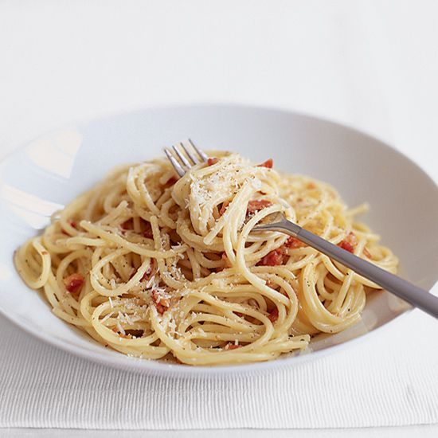

Spaghetti Carbonara

A delicious spaghetti carbonara recipe, the authentic Italian way.
Ingredients
- 100g pancetta
- 50g pecorino cheese
- 50g parmesan
- 2 garlic cloves, finely chopped
- 3 large eggs
- 350g spaghetti
- 50g butter
- Sea salt and ground pepper
Method
- Bring a large saucepan of water to the boil.
- Finely chop the pancetta, having first removed any rind. Grate the cheeses and mix them together.
- Beat the three eggs together in a bowl, seasoning to taste with salt and black pepper.
- Add salt to the boiling water and cook the spaghetti al dente.
- Fry the pancetta with the garlic with the butter.
- Lower the heat on the pancetta and lift the pasta into the pan with the pancetta. Don't throw away any of the pasta water and don't worry if some gets into the pan (that's the idea!)
- Mix the cheese in with the eggs.
- Take everything off of the heat, and mix the spaghetti and pancetta with the egg and cheese mixture.
- Add extra pasta water to the mix to create the sauce; it should not be wet, just moist.
- Serve.